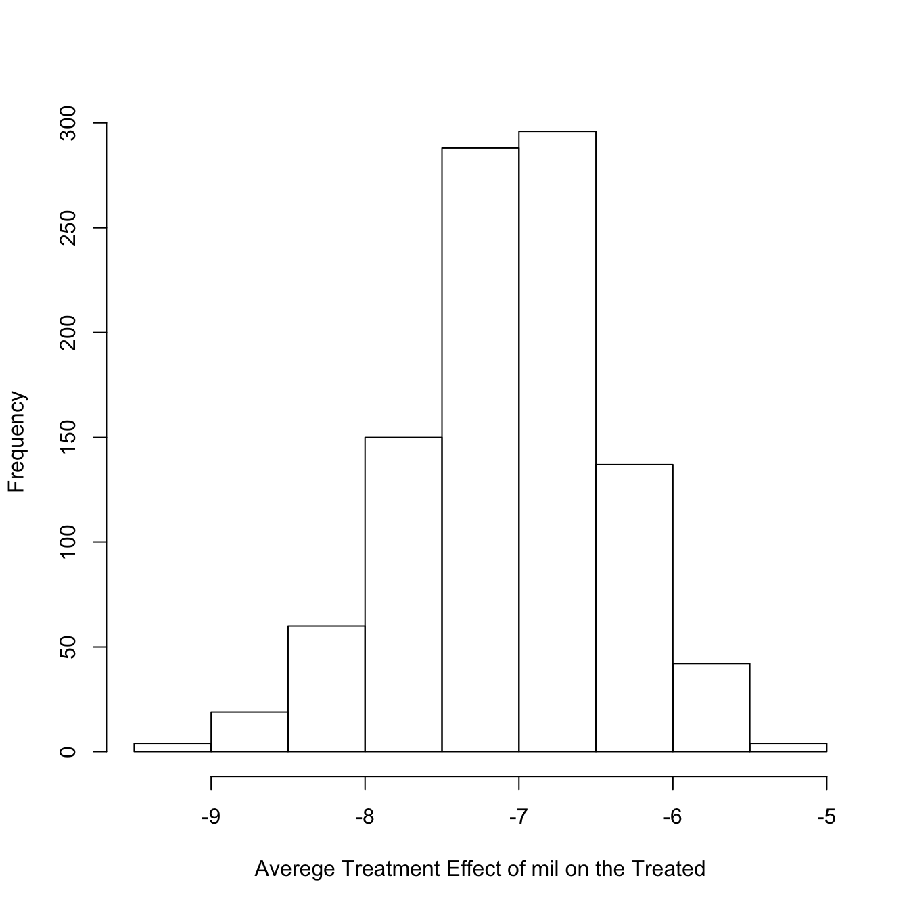

Built using Zelig version 5.1.2.9000
Sometimes the quantity of interest you are interested in is the average effect of some treatment on the group of individuals that received treatment (as opposed to, for example, the effect of the treatment averaged across all individuals in a study regardless of whether or not they received the treatment).
Average Treatment Effects on the Treated (ATT) quantities of interest can be generated with the ATT() function (or the identically named Zelig 5 method), for any zelig model that can construct expected values. Once you have simulated the ATT, they can be retrieved with the QI getters function: get_qi(). For example:
library(zeligverse)
library(dplyr) # load %>% pipe operator
# load data and estimate model
data(sanction)
zqi.out <- zelig(num ~ target + coop + mil,
model = "poisson", data = sanction, cite = FALSE)
# find the ATT where the treatement is mil = 1
z.att <- zqi.out %>%
ATT(treatment = "mil", treat = 1) %>%
get_qi(qi = "ATT", xvalue = "TE")
# summarize the results
hist(z.att,
main = NULL,
xlab ="Averege Treatment Effect of mil on the Treated")
In this example the treatment variable was mil. Units were denoted as treated when mil = 1. qi = "ATT", xvalue = "TE" specifies that we would like to extrat the ATT quantity of interest.
Assume there is a set of treatments \(\mathbb{T} \in \{0,1\}\), e.g. in the example above: mil = 0 and mil = 1. For each unit \(i\) there are corresponding potential outcomes \(Y_i(0)\) and \(Y_i(1)\), with unit-level casual effects of the treatment typically being: \(Y_i(1) - Y_i(0)\). The unit-level causal effect is the difference between the outcome from being exposed to the treatment and not being exposed.
We can think of the average causal effect across the entire population as:
\[ \tau_{fs} = \frac{1}{N} \sum_{i=1}^N(Y_i(1) - Y_i(0)) \]
where \(fs\) denotes a finite sample and \(N\) is the number of units in the sample.
We may be particularly interested in the effect of the treatment on units that were exposed to the treatment (\(i:W_i = 1\))–the ATT. The ATT is given by:
\[ \tau_{fs,t} = \frac{1}{N_t} \sum_{i:W_i=1}^N(Y_i(1) - Y_i(0)) \]
where \(N_t\) is the number of units actively exposed to the treatment.